über uns
Projekte
Freizeit
Schülerstreitschlichter
2 Jahre bei den Streitschlichtern – Ein Resümee
Mit dem Ende des Schuljahres verabschieden sich die Streitschlichter der 9. Klassen aus dem Streitschlichterteam, um sich im kommenden Schuljahr ganz auf die Abschlussprüfungen konzentrieren zu können. Zeit, einmal nachzufragen, welches Resümee die Jugendlichen nach ihrer Zeit als Streitschlichter an unserer Schule ziehen.
Wieso seid ihr vor 2 Jahren Streitschlichter geworden?“
Hier sind die Gründe durchaus verschieden. Während die einen sich durch die Streitschlichterausbildung besser auf den späteren Beruf vorbereitet fühlen und sich mithilfe des Streitschlichterzertifikats bessere Chancen im Bewerbungsprozess erhoffen, stand für andere der Wunsch im Vordergrund, Schülerinnen und Schülern bei Konflikten helfen zu können.
„Was war Euer bestes Erlebnis während der Streitschlichterzeit?“
Die Antworten hierzu sind einstimmig – mit großem Abstand war das Streitschlichtercamp DAS Highlight während der letzten 2 Jahre. Diese sehr intensiven 3 Tage, in denen gemeinsam mit den Streitschlichterteams anderer Schulen aus der Region das Schlichten trainiert wurde, ist allen nach wie vor sehr lebhaft in Erinnerung. Einige neu geknüpfte Freundschaften aus diesen Tagen bestehen auch jetzt noch.
„Was hat Euch nicht so gut gefallen? Was war anstrengend?“
Als anstrengend haben die Jugendlichen die eine oder andere Projektstunde in den jüngeren Klassen erlebt, in denen sie die Rolle der Lehrer eingenommen haben. Eine ganze Schulklasse für 45 Minuten für ein Thema zu begeistern, hat sich dabei mitunter als gar nicht so einfach herausgestellt… Außerdem hätten sich die Streitschlichter über eine größere Zahl an Streitschlichtungen gefreut. Also, liebe Schülerinnen und Schüler, traut Euch ruhig, das Streitschlichter-team anzusprechen!
Was würdet ihr den neuen Streitschlichtern für einen Tipp mitgeben?
- „Bleibt dabei – es lohnt sich!“
- „Bewahrt immer die Ruhe – auch wenn euch bei einer Streitschlichtung mal ein Fehler passiert!“
- „Seid immer höflich und offen!“
- „Seid immer höflich und offen!“
Bleibt uns nur, Danke zu sagen für Euer Engagement in den vergangenen 2 Jahren als Streitschlichter an unserer Schule. Es hat Spaß gemacht mit Euch! Wir wünschen Euch ein wunderbares letztes Schuljahr und natürlich alles Gute für den anstehenden Schulabschluss!
Und das sind sie, die neuen Streitschlichter im Schuljahr 2019/2020:
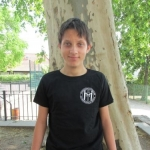 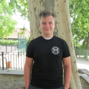 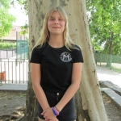Fiona, Leonie, Lilly, Niklas und Jeremy
Wir freuen uns auf die Zeit mit Euch und sind gespannt, welche neuen Ideen ihr mitbringt! Frau Bernsdorf und Frau Kruspe
Streitschlichtercamp 2019
Auch in diesem Schuljahr war eine kleine Gruppe von Schülern unserer Schule im Streitschlichtercamp, um sich zu zukünftigen Streitschlichtern ausbilden zu lassen.
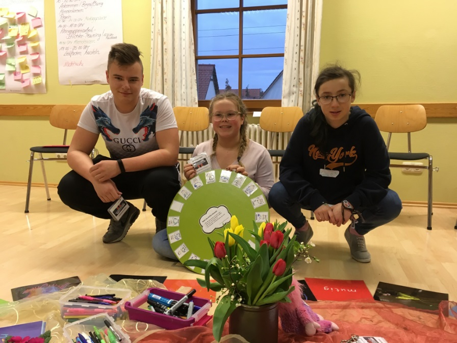Die 3 Jugendlichen aus der 8. Klasse lernten dabei gemeinsam mit den Streitschlichterteams zweier anderer Schulen viel Neues zum Thema Konflikte und Streitschlichtung. Es waren drei sehr intensive Tage, in denen trotz der langen Unterrichtsdauer bis in den Abend hinein nie Langeweile aufkam, viel gekichert und gelacht wurde und neue Freundschaften geknüpft werden konnten. Und es waren 3 Tage, die viel zu schnell vorbei waren. Nun sind die neuen Streitschlichter bestens vorbereitet auf ihre Tätigkeit hier an unserer Schule und wir freuen uns über dieses freiwillige zusätzliche Engagement.
Eierkuchen zur Einweihung
Seit Beginn dieses Schuljahres 2017 / 2018 sind wir- Nele, Sophie, Lilly, André und Jonas – das neue Streitschlichter-Team der 56. Oberschule. Das Schuljahr begann für uns mit einer kleinen Umzugsaktion, denn seit einigen Wochen haben wir ein neues Zimmer im Erdgeschoss der Schule ganz für uns allein, das wir nach unseren Wünschen gestalten und einräumen dürfen. Hier finden ab sofort die Streitschlichtungen und unsere wöchentlichen Treffen statt.
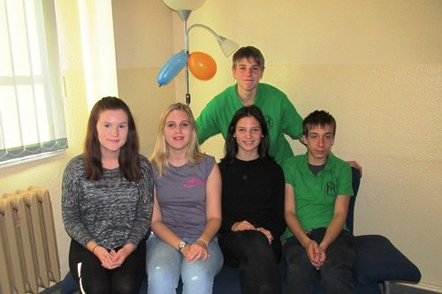Um den neuen Raum bekannt zu machen, überlegten wir uns eine Aktion, mit der uns die Aufmerksamkeit der anderen Schüler sicher war. Wir nutzten eine Pause, um leckere Eierkuchen zu verkaufen und dabei unser neues Zimmer zu präsentieren. Schon nach wenigen Minuten waren alle Eierkuchen restlos ausverkauft. Als nächstes haben wir uns vorgenommen, einen Streitschlichter-Schnuppertag für Schüler der Klasse 8 zu veranstalten, die Lust haben, nächste Jahr als Streitschlichter in unsere Fußstapfen zu treten. Wir hoffen, wir finden viele interessierte Nachfolgerinnen und Nachfolger, die genau so viel Spaß in der Streitschlichtergruppe haben wie wir!
Text: Silvana Kruspe
Streitschlichtercamp
Vom 2. – 4. März 2016 waren wir, 5 Schüler der 8. Klassen und gleichzeitig die „Neulinge“ im Streitschlichterteam der 56. Oberschule, im Streitschlichtercamp in Dreiskau-Muckern. Hier lernten wir gemeinsam mit Schülern aus der Oberschule Bad Lausick, wie man Konflikte unter Schülern schlichten kann und übten dies sehr ausführlich in verschiedenen Rollenspielen.
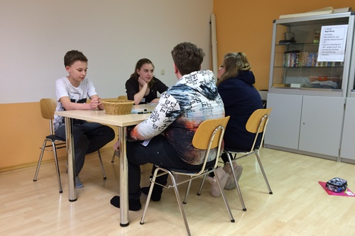Die drei Tage waren vollgefüllt mit Programm. Trotzdem kam der Spaß nicht zu kurz. Unter den Schülern aus Bad Lausickern haben wir schnell neue Freunde gefunden, mit denen wir auch nach dem Camp noch in Kontakt bleiben möchten. Das Camp war für uns ganz klar der Höhepunkt dieses Streitschlichterjahres!
Text: Silvana Kruspe
Streitschlichterteam 2015 / 2016
Am 30. Januar findet an unserer Schule der Tag der offenen Tür statt. Hier wollen wir die Gäste über unsere Arbeit als Streitschlichter informieren und dabei auch unsere neuen Streitschlichter vorstellen. Gerade sind wir mit den Vorbereitungen dieses Tages beschäftigt, zum Beispiel gestalten wir neue Bilderrahmen mit aktuellen Fotos unserer Gruppe, welche dann in den Gängen des Schulhauses zu sehen sein werden.
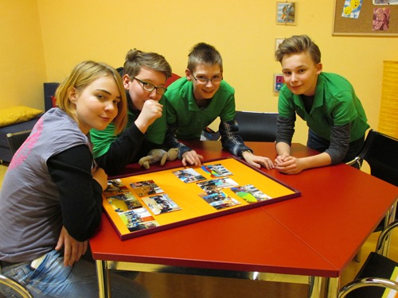Streitschlichtertreffen in der 56. Oberschule
Kurz vor Weihnachten haben wir, die Streitschlichter der 56. Oberschule, Gäste bei uns begrüßen dürfen. Die Petri-Oberschule und die Helmholtzschule besuchten uns mit ihren Streitschlichtergruppen. Kennengelernt hatten wir die Streitschlichter dieser Schulen im März, als wir gemeinsam im Streitschlichtercamp waren. Umso mehr freuten wir uns jetzt auf das Wiedersehen.
Gegenseitig tauschten wir uns darüber aus, an welchen Projekten wir gerade arbeiten und was es bei unserer Tätigkeit an den Schulen mitunter für Schwierigkeiten zu überwinden gilt. Jede Gruppe gestaltete einen kleinen Programmbeitrag. Wir stellten dabei eine Unterrichtsstunde zum Thema „Cybermobbing“ vor, die wir demnächst in einer 6. Klasse durchführen wollen.
Während einer weihnachtlichen Kaffeerunde mit Pfefferkuchen und Punsch konnten wir noch einmal miteinander ins Gespräch kommen.

 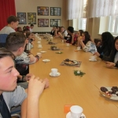
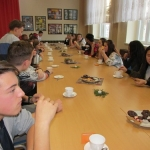
Für uns Streitschlichter war dies ein schöner Abschluss vor den Weihnachtsferien. Außerdem war hier erstmalig auch unser „Streitschlichternachwuchs“ dabei. Seit einigen Wochen erhält unser Team aus den 9. Klassen nämlich Verstärkung von 7 Schülern aus den 8. Klassen, die neu in die Streitschlichterarbeit eingestiegen sind.
Text: Silvana Kruspe
Streitschlichterteam 2014 / 2015
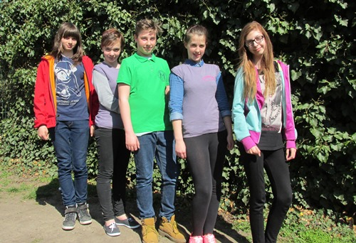Streitschlichterteam 2013 / 2014
In diesem Schuljahr begannen wir, uns nach geeignetem Streitschlichternachwuchs umzusehen. Da wir uns langsam dem Schulabschluss nähern, möchten wir jüngere Schüler für die Ausbildung zum Streitschlichter interessieren, die unsere Arbeit fortsetzen können, wenn wir im Prüfungsstress sind oder in der Ausbildung.

Unser Schnuppertag am 1. Oktober 2013 kam gut an und hat viele Schüler dazu angeregt bei uns mitzumachen.
 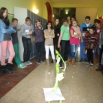
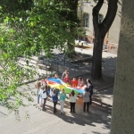
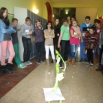
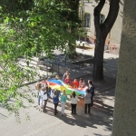